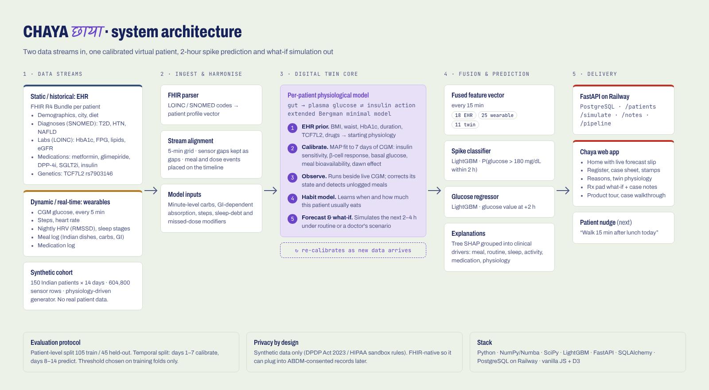
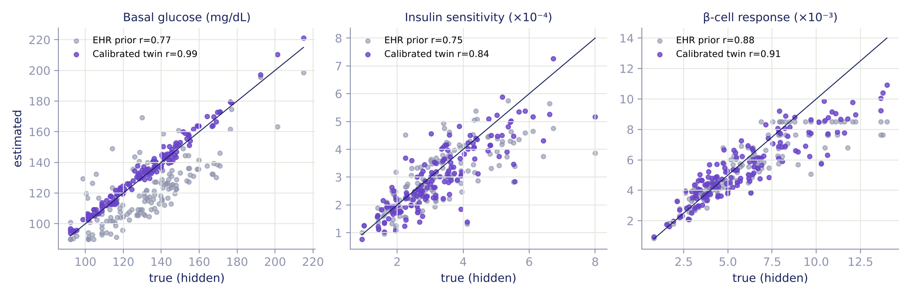
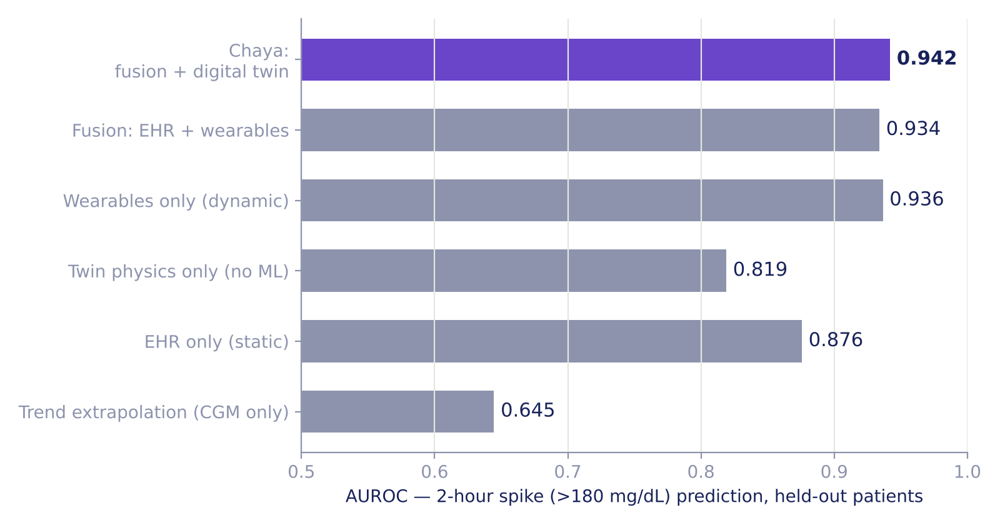
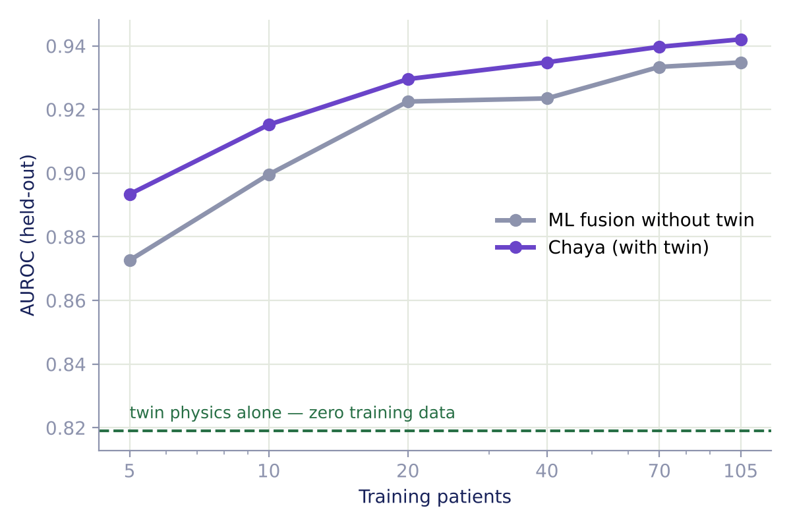
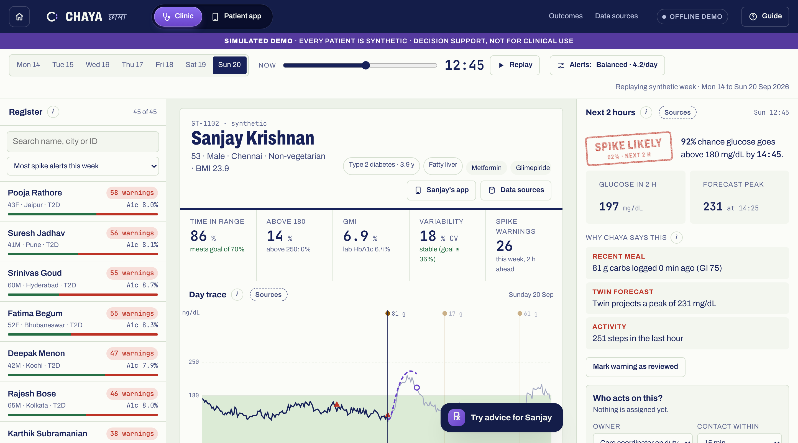
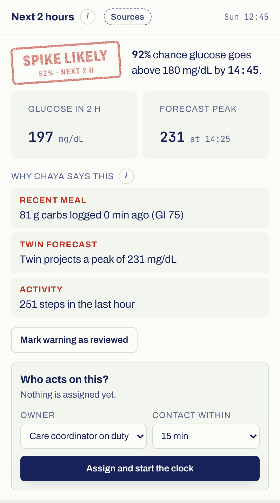
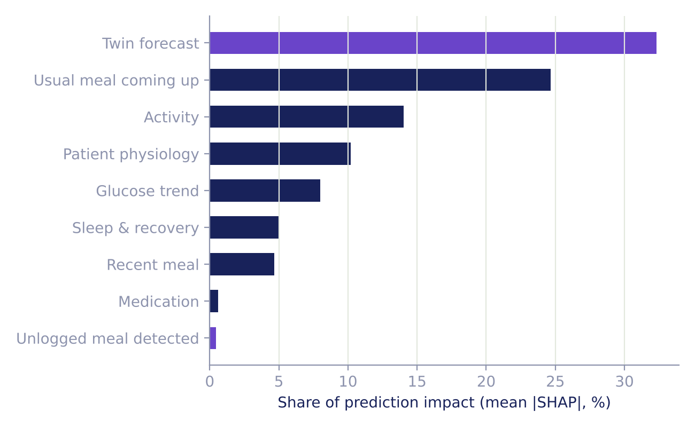
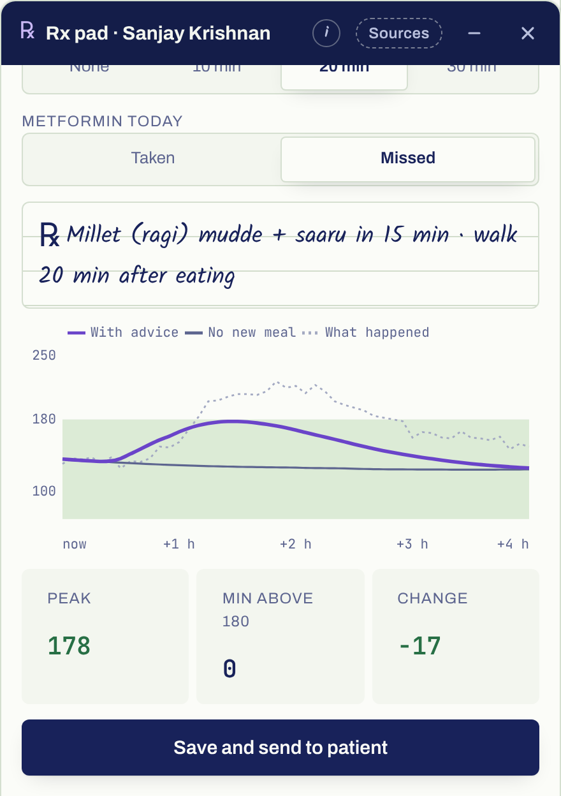

CGM is simulated from each patient's hidden physiology; HbA1c and fasting glucose are derived back from it, so both streams agree. The hidden truth is kept aside to check the twin.
Chaya05
Architecture

Chaya06
Does the twin learn the person?
A week of wearable data recovers each patient's hidden physiology.

basal glucose
0.99vs 0.77 EHR
insulin sensitivity
0.84vs 0.75 EHR
β-cell response
0.91vs 0.88 EHR
Correlation with true hidden parameters · 150 patients07
Results · 45 held-out patients
Eight in ten spikes, flagged before they happen.
0.942
AUROC, spike > 180 mg/dL within 2 hours
83%
sensitivity at 79% precision
87%
of spikes flagged ≥ 60 min ahead
24
mg/dL error on 2-h glucose (53 if glucose is assumed flat)
Patient-level split: 105 train / 45 test. Days 1–7 calibrate, days 8–14 predict. Threshold set on training folds only. Clarke error grid A+B: 99.3%.
Chaya08
Fusion matters
Each stream adds signal; the twin adds physiology.

Twin physics, zero training:0.819, far above the CGM trend at 0.645. It works from day one.
EHR alone knows who is at risk; wearables know when.
Fusion + twin gives the best of both: 0.942.
AUROC on held-out patients09
When the twin matters most
Physics fills the gap when data is scarce.

With only 5 training patients, the twin lifts AUROC from 0.873 to 0.893.
That is the situation of a new clinic, a new patient or a rare situation such as a festival day.
With lots of data, ML alone catches up. The twin's lasting value is what-if simulation, which a black box cannot do.
Chaya10
The doctor's view

Cohort triage · day replay with twin forecast · risk and reasons · twin physiology · what-if11
Explainable by design
Every alert comes with its reasons.


Tree SHAP contributions grouped into the drivers a clinician thinks in. Violet: drivers that come from the twin.
Chaya12
What-if simulation
Advice in numbers, for this patient's body.
Sanjay · 53 · T2D 3.9 y · Sunday 12:15, before lunch
Lunch in 15 minpeak mg/dLtime > 180
Chicken biryani 90 g · GI 72
237
115 min
Biryani + 20-min walk
217
85 min
Ragi mudde + saaru 60 g · GI 55
194
70 min
Ragi mudde + 20-min walk
178
0 min
Same patient, same morning. Swapping the grain and walking after lunch keeps him in range.

Peak glucose over the next 4 h, simulated by the calibrated twin13
Safety and privacy
Built to support the doctor, not to replace them.
Clinician in the loop
Decision support only. No dosing. Every alert shows its reasons and the twin's projection.
Alert fatigue managed
Consecutive alerts merge into one episode: about 4 per patient-day, with a threshold the clinic can tune.
DPDP-ready
Synthetic data only. FHIR-native, so it can use ABDM-consented records with purpose limitation.
Chaya14
Next
From prototype to clinic.
Chaya15
Proactive, not reactive
See the spike before it happens. Show the patient how to avoid it.